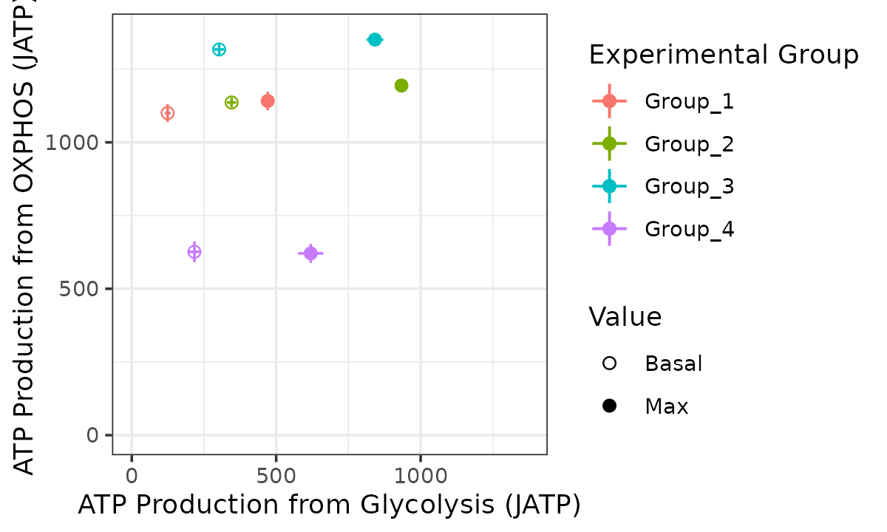
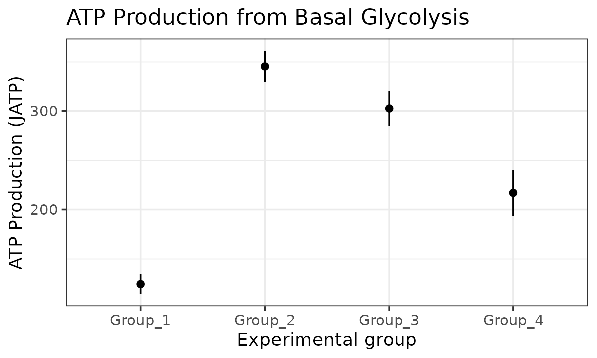
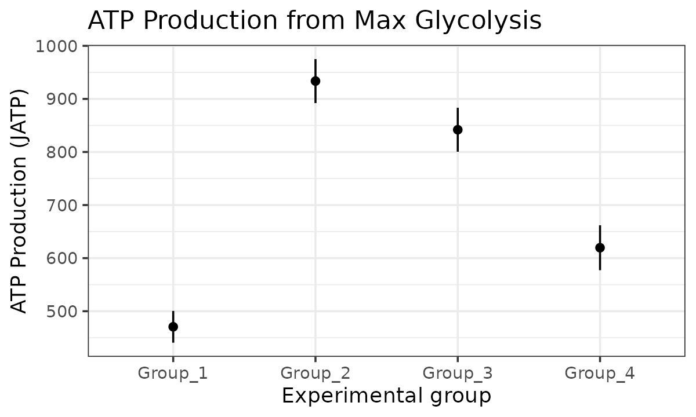
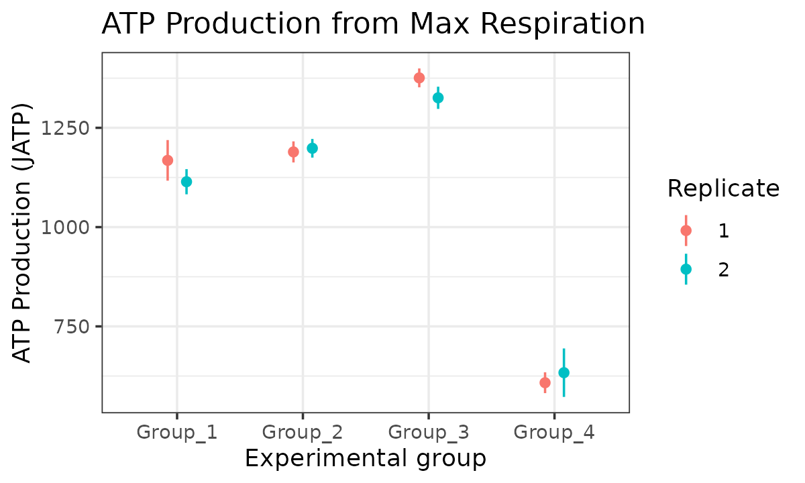
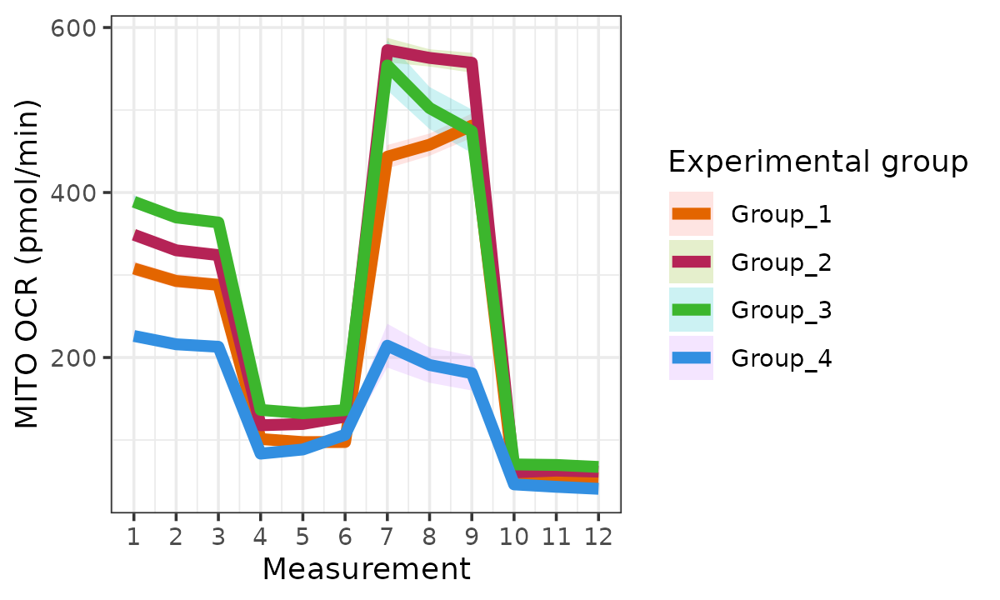
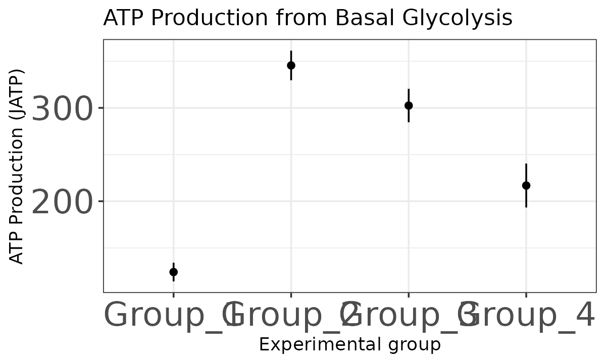

Importing Seahorse rates data
The read_data function takes a list of Excel files. An
easy way to get such a list is to put all your data in a directory and
list its contents. Here we use the package’s internal datasets, but
list.files will take a directory name as its first
argument.
rep_list <- system.file("extdata", package = "ceas") |>
list.files(pattern = "*.xlsx", full.names = TRUE)
raw_data <- readxl::read_excel(rep_list[1], sheet = 2)
knitr::kable(head(raw_data))| Measurement | Well | Group | Time | OCR | ECAR | PER |
|---|---|---|---|---|---|---|
| 1 | A01 | Background | 1.304765 | 0.0000 | 0.00000 | 0.0000 |
| 1 | A02 | Group_1 MITO | 1.304765 | 305.2426 | 30.64529 | 334.4771 |
| 1 | A03 | Group_1 MITO | 1.304765 | 307.9862 | 33.27668 | 358.4754 |
| 1 | A04 | Group_2 MITO | 1.304765 | 339.3399 | 49.17751 | 503.4910 |
| 1 | A05 | Group_2 MITO | 1.304765 | 321.9398 | 47.94602 | 492.2597 |
| 1 | A06 | Group_2 MITO | 1.304765 | 323.7962 | 46.84232 | 482.1940 |
The data requires the following columns: Measurement, Well, Group,
Time, OCR, ECAR, PER. The Group column needs to be in the
format biological_group<space>Assay_type as shown
above. Upon reading with read_data, the Group
column is split into two group and assay
columns on the space. This output format can be set in the Seahorse
machine before starting the experiment. If you already have the data,
this column will have to be converted to this format to work with
ceas.
| Measurement | Well | Time | OCR | ECAR | PER | exp_group | assay_type | replicate |
|---|---|---|---|---|---|---|---|---|
| 1 | A01 | 1.304765 | 0.0000 | 0.00000 | 0.0000 | Background | NA | 1 |
| 1 | A02 | 1.304765 | 305.2426 | 30.64529 | 334.4771 | Group_1 | MITO | 1 |
| 1 | A03 | 1.304765 | 307.9862 | 33.27668 | 358.4754 | Group_1 | MITO | 1 |
| 1 | A04 | 1.304765 | 339.3399 | 49.17751 | 503.4910 | Group_2 | MITO | 1 |
| 1 | A05 | 1.304765 | 321.9398 | 47.94602 | 492.2597 | Group_2 | MITO | 1 |
| 1 | A06 | 1.304765 | 323.7962 | 46.84232 | 482.1940 | Group_2 | MITO | 1 |
Normalization
There are two types of normalization involved in Seahorse data analysis. One is background normalization done by the Wave software. ceas will produce a warning if it finds that the “Background” data are not 0 (see first row of the table above).
The other is biological normalization based on the cell count or the mass of protein. If the data is not already biologically normalized, you will need a csv file containing experimental groups and cell counts or g of protein in this format:
norm_csv <- system.file("extdata", package = "ceas") |>
list.files(pattern = "norm.csv", full.names = TRUE)
read.csv(norm_csv) |> knitr::kable()| exp_group | measure |
|---|---|
| Group_1 | 30000 |
| Group_2 | 30000 |
| Group_3 | 5000 |
| Group_4 | 5000 |
Your csv file’s full path may be passed into read_data()
using the norm argument.
| Measurement | Well | Time | OCR | ECAR | PER | exp_group | assay_type | replicate |
|---|---|---|---|---|---|---|---|---|
| 1 | A01 | 1.304765 | 0.00000 | 0.000000 | 0.00000 | Background | NA | 1 |
| 1 | A02 | 1.304765 | 50.87376 | 5.107549 | 55.74619 | Group_1 | MITO | 1 |
| 1 | A03 | 1.304765 | 51.33103 | 5.546114 | 59.74590 | Group_1 | MITO | 1 |
| 1 | A04 | 1.304765 | 56.55665 | 8.196252 | 83.91516 | Group_2 | MITO | 1 |
| 1 | A05 | 1.304765 | 53.65663 | 7.991003 | 82.04329 | Group_2 | MITO | 1 |
| 1 | A06 | 1.304765 | 53.96603 | 7.807053 | 80.36566 | Group_2 | MITO | 1 |
Calculating energetics
Partitioning data
Note:
When we use the term ‘max’ in the package documentation we mean the
maximal experimental OCR and ECAR values rather than absolute biological
maximums.
The energetics calculation workflow involves partitioning the data into its time point and assay intervals.
partitioned_data <- partition_data(seahorse_rates)Alternative data formats
While the default options are set for an experiment with both a
mitochondrial and glycolysis assay, if you have only a mitochondrial
assay or no glycolysis assay, the assay_types list
parameter can be modified to account for that.
partitioned_data <- partition_data(
seahorse_rates,
assay_types = list(
basal = "MITO",
uncoupled = "MITO",
maxresp = "MITO",
nonmito = "MITO",
no_glucose_glyc = "GLYCO",
glucose_glyc = "GLYCO",
max_glyc = "GLYCO"
),
basal_tp = 3,
uncoupled_tp = 6,
maxresp_tp = 8,
nonmito_tp = 12,
no_glucose_glyc_tp = 3,
glucose_glyc_tp = 6,
max_glyc_tp = 8
)
partitioned_data <- partition_data(
seahorse_rates,
assay_types = list(
basal = "RefAssay",
uncoupled = "RefAssay",
maxresp = NA,
nonmito = "RefAssay",
no_glucose_glyc = "RefAssay",
glucose_glyc = "RefAssay",
max_glyc = NA
),
basal_tp = 5,
uncoupled_tp = 10,
nonmito_tp = 12,
maxresp = NA,
no_glucose_glyc_tp = 1,
glucose_glyc_tp = 5,
max_glyc = NA
)
partitioned_data <- partition_data(
seahorse_rates,
assay_types = list(
basal = "MITO",
uncoupled = "MITO",
maxresp = "MITO",
nonmito = "MITO",
no_glucose_glyc = NA,
glucose_glyc = "MITO",
max_glyc = NA
),
basal_tp = 3,
uncoupled_tp = 6,
maxresp_tp = 8,
nonmito_tp = 12,
no_glucose_glyc_tp = NA,
glucose_glyc_tp = 3,
max_glyc_tp = NA
)partitioned_data <- partition_data(
seahorse_rates,
assay_types = list(
basal = "RCR",
uncoupled = "RCR",
maxresp = "RCR,"
nonmito = "RCR",
no_glucose_glyc = NA,
glucose_glyc = "GC",
max_glyc = "GC"
),
basal_tp = 3,
uncoupled_tp = 6,
maxresp_tp = 8,
nonmito_tp = 12,
no_glucose_glyc = NA,
glucose_glyc_tp = 3,
max_glyc_tp = 9
)Note that the time point parameters (maxresp_tp and
no_glucose_glyc_tp) also need to be changed
accordingly.
The get_energetics function requires pH,
pK
and buffer values.
energetics <- get_energetics(partitioned_data, ph = 7.4, pka = 6.093, buffer = 0.10)For more information on the calculations see the article on ATP calculations.
Plotting
Bioenergetic scope plot
The bioscope_plot function plots a 2D representation of
group “bioenergetic scope.” Bioenergetic scope describes the theoretical
energetic space in which a matrix operates. The bioenergetic scope
coordinates are JATP from OXPHOS on the y-axis and JATP from glycolysis
on the x-axis. The points represent mean basal and/or max JATP from
OXPHOS and glycolysis and the vertical and horizontal lines represent
the standard deviation or confidence interval of JATP from OXPHOS or
glycolysis, respectively.
(bioscope <- bioscope_plot(energetics))
Rate plots
The rate_plot function provides an overview of OCR or
ECAR for each assay type over time, which enables cross-group energetic
comparisons before and after the addition of energetic-modulating
compounds. The rate_plot line represents mean group OCR or
ECAR over the sequential measurements (x-axis) and the shaded variance
region represents standard deviation or specified confidence
interval.
ATP plots
The atp_plot function plots group JATP values, which
enables cross-group OXPHOS and glycolytic JATP comparisons at basal and
max conditions. The atp_plot symbols represent the mean
basal or max JATP from OXPHOS or glycolysis, and the crossbar boundaries
represent the standard deviation or confidence interval JATP
variance.
(basal_glyc <- atp_plot(energetics, basal_vs_max = "basal", glyc_vs_resp = "glyc"))
(basal_resp <- atp_plot(energetics, basal_vs_max = "basal", glyc_vs_resp = "resp"))
(max_glyc <- atp_plot(energetics, basal_vs_max = "max", glyc_vs_resp = "glyc"))
(max_resp <- atp_plot(energetics, basal_vs_max = "max", glyc_vs_resp = "resp"))
Customizing plots
CEAS is designed to work with existing ggplot2
customization functionality and doesn’t include more than shape and size
options for its plots.
For example, to change the colors used in the plot, simply make the plot and add the custom colors you’d like:
Colors
custom_colors <- c("#e36500", "#b52356", "#3cb62d", "#328fe1")
bioscope +
ggplot2::scale_color_manual(
values = custom_colors
)
ocr +
ggplot2::scale_color_manual(
values = custom_colors
)
Labels
ecar +
ggplot2::labs(x = "Time points")
basal_glyc +
ggplot2::theme(axis.text = ggplot2::element_text(size = 20))
Editing functions
We are working on making the plots as customizable as possible.
However, if there are options that cannot be set in the calls to the
plotting functions or with ggplot2 functions, you can get
the code used to make the plots by running the function name without
parenthesis and modify it. Further, since every step in the ceas
workflow provides a dataset, you can run the modified function or your
own custom plotting functions on those datasets.
rate_plot
function (seahorse_rates, measure = "OCR", assay = "MITO", error_bar = "ci",
conf_int = 0.95, group_label = "Experimental group")
{
stopifnot(`'measure' should be 'OCR' or 'ECAR'` = measure %in%
c("OCR", "ECAR"))
stopifnot(`'error_bar' should be 'sd' or 'ci'` = error_bar %in%
c("sd", "ci"))
stopifnot(`'conf_int' should be between 0 and 1` = conf_int >
0 && conf_int < 1)
data_cols <- c("Measurement", "Well", "OCR", "ECAR", "PER",
"exp_group", "assay_type", "replicate")
missing_cols <- setdiff(data_cols, colnames(seahorse_rates))
if (length(missing_cols) != 0) {
stop(paste0("'", missing_cols, "'", " column was not found in input data\n"))
}
Measurement <- NULL
exp_group <- NULL
lower_bound <- NULL
upper_bound <- NULL
plot_data <- get_rate_summary(seahorse_rates, measure, assay,
error_bar, conf_int)
y_labels <- list(OCR = paste0(assay, " OCR (pmol/min)"),
ECAR = paste0(assay, " ECAR (mpH/min)"))
ggplot(plot_data, aes(x = Measurement, y = mean, color = exp_group,
group = exp_group, fill = exp_group)) + geom_line(size = 2) +
geom_ribbon(aes(ymin = lower_bound, ymax = upper_bound),
alpha = 0.2, color = NA) + scale_x_continuous(breaks = seq(1,
12, by = 1)) + xlab("Measurement") + ylab(y_labels[measure]) +
labs(color = group_label, fill = group_label) + theme_bw()
}In RStudio, you can run utils::edit to modify a
function.
edit(rate_plot)